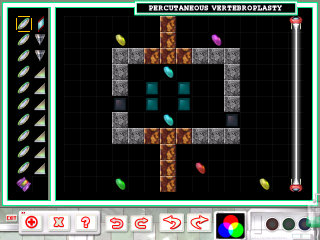

| | |
| | |
| Level | Percutaneous Vertebroplasty |
| Difficulty | Emergency |
| | |
| Author | Olivio Netto |
| Pieces | 21 |
| | |
| | |
| | |
|  |
Text Hints |
| | Obscure | "It's not much of one, but the name is a slight hint" |
| Good Hint | "Running out of pieces? You're on the wrong track!" |
| Good Hint | "Neither of the original composite beams is used to hit a coin directly" |
| Great Hint | "Create cyan inside the vertebra" |
| Great Hint | "A cyan beam is split twice" |
Picture Hints
Remember that, while picture hints most often show a portion of the solution they occasionally only suggest the solution by showing a pattern used.
Level Notes
The original name of this level was called "the crusher". We happened to notice that the layout of the walls
look a bit like a vertebra on a spine. So in order to turn this idea into a medically themed name, the idea of a spinal
compression fracture came up, for which there is a fairly new operation which has the name of this level. The operation
involves injecting a kind of cement into the weakened vertebra (usually caused by osteoporosis) to support the weight
of the rest of the spine (kind of like having a tooth filled). As well a barrier is sometimes built on the outside to prevent
further damage and supply more support (analogous to a dental crown). The beauty of this operation is that it is
percutaneous meaning that access to the vertebra is done via needle-puncture, so the skin doesn't have to be cut.
If you look at actual before and after X-ray images of this operation, in fact the "after" image looks very much like the
solution to this level!
|
Back To Index
|